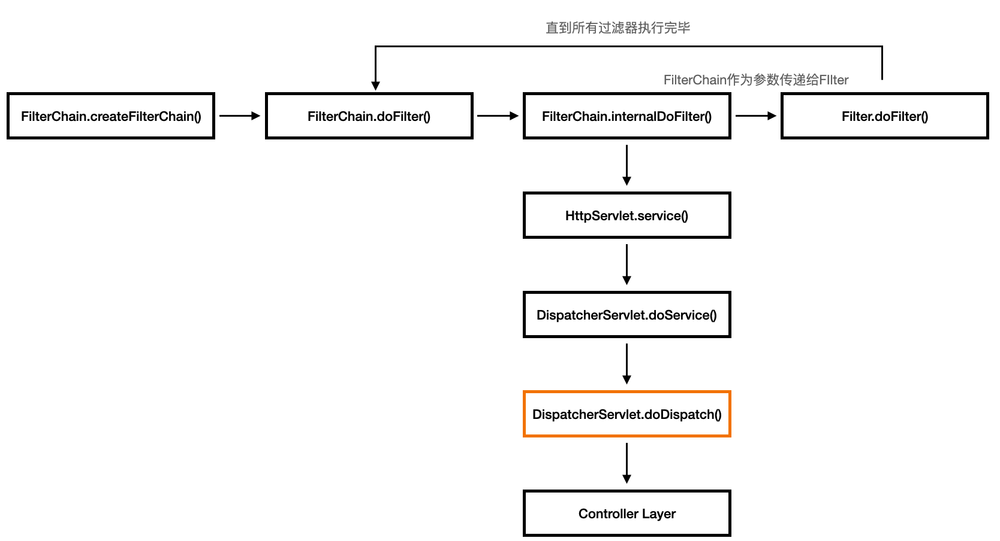
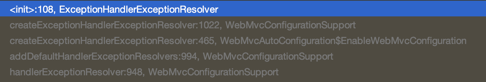
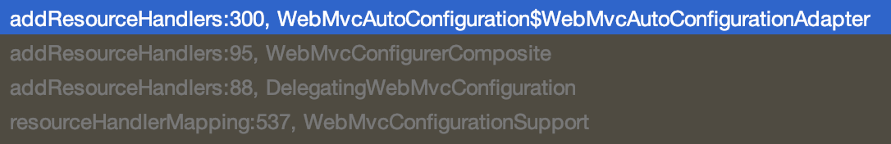
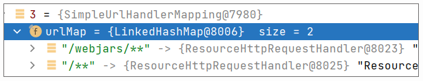

- 00 导读 5分钟轻松了解Spring基础知识.md.html
- 00 开篇词 贴心“保姆”Spring罢工了怎么办？.md.html
- 01 Spring Bean 定义常见错误.md.html
- 02 Spring Bean 依赖注入常见错误（上）.md.html
- 03 Spring Bean 依赖注入常见错误（下）.md.html
- 04 Spring Bean 生命周期常见错误.md.html
- 05 Spring AOP 常见错误（上）.md.html
- 06 Spring AOP 常见错误（下）.md.html
- 07 Spring事件常见错误.md.html
- 08 答疑现场：Spring Core 篇思考题合集.md.html
- 09 Spring Web URL 解析常见错误.md.html
- 10 Spring Web Header 解析常见错误.md.html
- 11 Spring Web Body 转化常见错误.md.html
- 12 Spring Web 参数验证常见错误.md.html
- 13 Spring Web 过滤器使用常见错误（上）.md.html
- 14 Spring Web 过滤器使用常见错误（下）.md.html
- 15 Spring Security 常见错误.md.html
- 16 Spring Exception 常见错误.md.html
- 17 答疑现场：Spring Web 篇思考题合集.md.html
- 18 Spring Data 常见错误.md.html
- 19 Spring 事务常见错误（上）.md.html
- 20 Spring 事务常见错误（下）.md.html
- 21 Spring Rest Template 常见错误.md.html
- 22 Spring Test 常见错误.md.html
- 23 答疑现场：Spring 补充篇思考题合集.md.html
- 导读 5分钟轻松了解一个HTTP请求的处理过程.md.html
- 知识回顾 系统梳理Spring编程错误根源.md.html
- 结束语 问题总比解决办法多.md.html
- 捐赠
16 Spring Exception 常见错误
你好，我是傅健。
今天，我们来学习 Spring 的异常处理机制。Spring 提供了一套健全的异常处理框架，以便我们在开发应用的时候对异常进行处理。但是，我们也会在使用的时候遇到一些麻烦，接下来我将通过两个典型的错误案例，带着你结合源码进行深入了解。
案例 1：小心过滤器异常
为了方便讲解，我们还是沿用之前在事务处理中用到的学生注册的案例，来讨论异常处理的问题：
@Controller
@Slf4j
public class StudentController {
public StudentController(){
System.out.println("construct");
}
@PostMapping("/regStudent/{name}")
@ResponseBody
public String saveUser(String name) throws Exception {
System.out.println("......用户注册成功");
return "success";
}
}
为了保证安全，这里需要给请求加一个保护，通过验证 Token 的方式来验证请求的合法性。这个 Token 需要在每次发送请求的时候带在请求的 header 中，header 的 key 是 Token。
为了校验这个 Token，我们引入了一个 Filter 来处理这个校验工作，这里我使用了一个最简单的 Token：111111。
当 Token 校验失败时，就会抛出一个自定义的 NotAllowException，交由 Spring 处理：
@WebFilter
@Component
public class PermissionFilter implements Filter {
@Override
public void doFilter(ServletRequest request, ServletResponse response, FilterChain chain) throws IOException, ServletException {
HttpServletRequest httpServletRequest = (HttpServletRequest) request;
String token = httpServletRequest.getHeader("token");
if (!"111111".equals(token)) {
System.out.println("throw NotAllowException");
throw new NotAllowException();
}
chain.doFilter(request, response);
}
@Override
public void init(FilterConfig filterConfig) throws ServletException {
}
@Override
public void destroy() {
}
NotAllowException 就是一个简单的 RuntimeException 的子类：
public class NotAllowException extends RuntimeException {
public NotAllowException() {
super();
}
}
同时，新增了一个 RestControllerAdvice 来处理这个异常，处理方式也很简单，就是返回一个 403 的 resultCode：
@RestControllerAdvice
public class NotAllowExceptionHandler {
@ExceptionHandler(NotAllowException.class)
@ResponseBody
public String handle() {
System.out.println("403");
return "{\"resultCode\": 403}";
}
}
为了验证一下失败的情况，我们模拟了一个请求，在 HTTP 请求头里加上一个 Token，值为 111，这样就会引发错误了，我们可以看看会不会被 NotAllowExceptionHandler 处理掉。
然而，在控制台上，我们只看到了下面这样的输出，这其实就说明了 NotAllowExceptionHandler 并没有生效。
throw NotAllowException
想下问题出在哪呢？我们不妨对 Spring 的异常处理过程先做一个了解。
案例解析
我们先来回顾一下第13课讲过的过滤器执行流程图，这里我细化了一下：

从这张图中可以看出，当所有的过滤器被执行完毕以后，Spring 才会进入 Servlet 相关的处理，而 DispatcherServlet 才是整个 Servlet 处理的核心，它是前端控制器设计模式的实现，提供 Spring Web MVC 的集中访问点并负责职责的分派。正是在这里，Spring 处理了请求和处理器之间的对应关系，以及这个案例我们所关注的问题——统一异常处理。
其实说到这里，我们已经了解到过滤器内异常无法被统一处理的大致原因，就是因为异常处理发生在上图的红色区域，即DispatcherServlet中的doDispatch()，而此时，过滤器已经全部执行完毕了。
下面我们将深入分析 Spring Web 对异常统一处理的逻辑，深刻理解其内部原理。
首先我们来了解下ControllerAdvice是如何被Spring加载并对外暴露的。在Spring Web 的核心配置类 WebMvcConfigurationSupport 中，被 @Bean 修饰的 handlerExceptionResolver()，会调用addDefaultHandlerExceptionResolvers() 来添加默认的异常解析器。
@Bean
public HandlerExceptionResolver handlerExceptionResolver(
@Qualifier("mvcContentNegotiationManager") ContentNegotiationManager contentNegotiationManager) {
List<HandlerExceptionResolver> exceptionResolvers = new ArrayList<>();
configureHandlerExceptionResolvers(exceptionResolvers);
if (exceptionResolvers.isEmpty()) {
addDefaultHandlerExceptionResolvers(exceptionResolvers, contentNegotiationManager);
}
extendHandlerExceptionResolvers(exceptionResolvers);
HandlerExceptionResolverComposite composite = new HandlerExceptionResolverComposite();
composite.setOrder(0);
composite.setExceptionResolvers(exceptionResolvers);
return composite;
}
最终按照下图的调用栈，Spring 实例化了ExceptionHandlerExceptionResolver类。

从源码中我们可以看出，ExceptionHandlerExceptionResolver 类实现了InitializingBean接口，并覆写了afterPropertiesSet()。
public void afterPropertiesSet() {
// Do this first, it may add ResponseBodyAdvice beans
initExceptionHandlerAdviceCache();
//省略非关键代码
}
并在 initExceptionHandlerAdviceCache() 中完成了所有 ControllerAdvice 中的ExceptionHandler 的初始化。其具体操作，就是查找所有 @ControllerAdvice 注解的 Bean，把它们放到成员变量 exceptionHandlerAdviceCache 中。
在我们这个案例里，就是指 NotAllowExceptionHandler 这个异常处理器。
private void initExceptionHandlerAdviceCache() {
//省略非关键代码
List<ControllerAdviceBean> adviceBeans = ControllerAdviceBean.findAnnotatedBeans(getApplicationContext());
for (ControllerAdviceBean adviceBean : adviceBeans) {
Class<?> beanType = adviceBean.getBeanType();
if (beanType == null) {
throw new IllegalStateException("Unresolvable type for ControllerAdviceBean: " + adviceBean);
}
ExceptionHandlerMethodResolver resolver = new ExceptionHandlerMethodResolver(beanType);
if (resolver.hasExceptionMappings()) {
this.exceptionHandlerAdviceCache.put(adviceBean, resolver);
}
//省略非关键代码
}
到这，我们可以总结一下，WebMvcConfigurationSupport 中的handlerExceptionResolver() 实例化并注册了一个ExceptionHandlerExceptionResolver 的实例，而所有被 @ControllerAdvice 注解修饰的异常处理器，都会在 ExceptionHandlerExceptionResolver 实例化的时候自动扫描并装载在其类成员变量 exceptionHandlerAdviceCache 中。
当第一次请求发生时，DispatcherServlet 中的 initHandlerExceptionResolvers() 将获取所有注册到 Spring 的 HandlerExceptionResolver 类型的实例，而ExceptionHandlerExceptionResolver 恰好实现了 HandlerExceptionResolver 接口，这些 HandlerExceptionResolver 类型的实例则会被写入到类成员变量handlerExceptionResolvers中。
private void initHandlerExceptionResolvers(ApplicationContext context) {
this.handlerExceptionResolvers = null;
if (this.detectAllHandlerExceptionResolvers) {
// Find all HandlerExceptionResolvers in the ApplicationContext, including ancestor contexts.
Map<String, HandlerExceptionResolver> matchingBeans = BeanFactoryUtils
.beansOfTypeIncludingAncestors(context, HandlerExceptionResolver.class, true, false);
if (!matchingBeans.isEmpty()) {
this.handlerExceptionResolvers = new ArrayList<>(matchingBeans.values());
// We keep HandlerExceptionResolvers in sorted order.
AnnotationAwareOrderComparator.sort(this.handlerExceptionResolvers);
}
//省略非关键代码
}
接着我们再来了解下ControllerAdvice是如何被Spring消费并处理异常的。下文贴出的是核心类 DispatcherServlet 中的核心方法 doDispatch() 的部分代码：
protected void doDispatch(HttpServletRequest request, HttpServletResponse response) throws Exception {
//省略非关键代码
try {
ModelAndView mv = null;
Exception dispatchException = null;
try {
//省略非关键代码
//查找当前请求对应的 handler，并执行
//省略非关键代码
}
catch (Exception ex) {
dispatchException = ex;
}
catch (Throwable err) {
dispatchException = new NestedServletException("Handler dispatch failed", err);
}
processDispatchResult(processedRequest, response, mappedHandler, mv, dispatchException);
}
//省略非关键代码
Spring 在执行用户请求时，当在“查找”和“执行”请求对应的 handler 过程中发生异常，就会把异常赋值给 dispatchException，再交给 processDispatchResult() 进行处理。
private void processDispatchResult(HttpServletRequest request, HttpServletResponse response,
@Nullable HandlerExecutionChain mappedHandler, @Nullable ModelAndView mv,
@Nullable Exception exception) throws Exception {
boolean errorView = false;
if (exception != null) {
if (exception instanceof ModelAndViewDefiningException) {
mv = ((ModelAndViewDefiningException) exception).getModelAndView();
}
else {
Object handler = (mappedHandler != null ? mappedHandler.getHandler() : null);
mv = processHandlerException(request, response, handler, exception);
errorView = (mv != null);
}
}
//省略非关键代码
进一步处理后，即当 Exception 不为 null 时，继续交给 processHandlerException处理。
protected ModelAndView processHandlerException(HttpServletRequest request, HttpServletResponse response,
@Nullable Object handler, Exception ex) throws Exception {
//省略非关键代码
ModelAndView exMv = null;
if (this.handlerExceptionResolvers != null) {
for (HandlerExceptionResolver resolver : this.handlerExceptionResolvers) {
exMv = resolver.resolveException(request, response, handler, ex);
if (exMv != null) {
break;
}
}
}
//省略非关键代码
}
然后，processHandlerException 会从类成员变量 handlerExceptionResolvers 中获取有效的异常解析器，对异常进行解析。
显然，这里的 handlerExceptionResolvers 一定包含我们声明的NotAllowExceptionHandler#NotAllowException 的异常处理器的 ExceptionHandlerExceptionResolver 包装类。
问题修正
为了利用 Spring MVC 的异常处理机制，我们需要对 Filter 做一些改造。手动捕获异常，并将异常 HandlerExceptionResolver 进行解析处理。
我们可以这样修改 PermissionFilter，注入 HandlerExceptionResolver：
@Autowired
@Qualifier("handlerExceptionResolver")
private HandlerExceptionResolver resolver;
然后，在 doFilter 里捕获异常并交给 HandlerExceptionResolver 处理：
public void doFilter(ServletRequest request, ServletResponse response, FilterChain chain) throws IOException, ServletException {
HttpServletRequest httpServletRequest = (HttpServletRequest) request;
HttpServletResponse httpServletResponse = (HttpServletResponse) response;
String token = httpServletRequest.getHeader("token");
if (!"111111".equals(token)) {
System.out.println("throw NotAllowException");
resolver.resolveException(httpServletRequest, httpServletResponse, null, new NotAllowException());
return;
}
chain.doFilter(request, response);
}
当我们尝试用错误的 Token 请求，控制台得到了以下信息：
throw NotAllowException
403
返回的 JSON 是：
{"resultCode": 403}
再换成正确的 Token 请求，这些错误信息就都没有了，到这，问题解决了。
案例 2：特殊的 404 异常
继续沿用学生注册的案例，为了防止一些异常的访问，我们需要记录所有 404 状态的访问记录，并返回一个我们的自定义结果。
一般使用 RESTful 接口时我们会统一返回 JSON 数据，返回值格式如下：
{"resultCode": 404}
但是 Spring 对 404 异常是进行了默认资源映射的，并不会返回我们想要的结果，也不会对这种错误做记录。
于是我们添加了一个 ExceptionHandlerController，它被声明成@RestControllerAdvice来全局捕获 Spring MVC 中抛出的异常。
ExceptionHandler 的作用正是用来捕获指定的异常：
@RestControllerAdvice
public class MyExceptionHandler {
@ResponseStatus(HttpStatus.NOT_FOUND)
@ExceptionHandler(Exception.class)
@ResponseBody
public String handle404() {
System.out.println("404");
return "{\"resultCode\": 404}";
}
}
我们尝试发送一个错误的 URL 请求到之前实现过的 /regStudent 接口，并把请求地址换成 /regStudent1，得到了以下结果：
{"timestamp":"2021-05-19T22:24:01.559+0000","status":404,"error":"Not Found","message":"No message available","path":"/regStudent1"}
很显然，这个结果不是我们想要的，看起来应该是 Spring 默认的返回结果。那是什么原因导致 Spring 没有使用我们定义的异常处理器呢？
案例解析
我们可以从异常处理的核心处理代码开始分析，DispatcherServlet 中的 doDispatch() 核心代码如下：
protected void doDispatch(HttpServletRequest request, HttpServletResponse response) throws Exception {
//省略非关键代码
mappedHandler = getHandler(processedRequest);
if (mappedHandler == null) {
noHandlerFound(processedRequest, response);
return;
}
//省略非关键代码
}
首先调用 getHandler() 获取当前请求的处理器，如果获取不到，则调用noHandlerFound()：
protected void noHandlerFound(HttpServletRequest request, HttpServletResponse response) throws Exception {
if (this.throwExceptionIfNoHandlerFound) {
throw new NoHandlerFoundException(request.getMethod(), getRequestUri(request),
new ServletServerHttpRequest(request).getHeaders());
}
else {
response.sendError(HttpServletResponse.SC_NOT_FOUND);
}
}
noHandlerFound() 的逻辑非常简单，如果 throwExceptionIfNoHandlerFound 属性为 true，则直接抛出 NoHandlerFoundException 异常，反之则会进一步获取到对应的请求处理器执行，并将执行结果返回给客户端。
到这，真相离我们非常近了，我们只需要将 throwExceptionIfNoHandlerFound 默认设置为 true 即可，这样就会抛出 NoHandlerFoundException 异常，从而被 doDispatch()内的 catch 俘获。进而就像案例1介绍的一样，最终能够执行我们自定义的异常处理器MyExceptionHandler。
于是，我们开始尝试，因为 throwExceptionIfNoHandlerFound 对应的 Spring 配置项为 throw-exception-if-no-handler-found，我们将其加入到 application.properties 配置文件中，设置其值为 true。
设置完毕后，重启服务并再次尝试，你会发现结果没有任何变化，这个问题也没有被解决。
实际上这里还存在另一个坑，在 Spring Web 的 WebMvcAutoConfiguration 类中，其默认添加的两个 ResourceHandler，一个是用来处理请求路径/webjars/*_*_，而另一个是/**。
即便当前请求没有定义任何对应的请求处理器，getHandler() 也一定会获取到一个 Handler 来处理当前请求，因为第二个匹配 /** 路径的 ResourceHandler 决定了任何请求路径都会被其处理。mappedHandler == null 判断条件永远不会成立，显然就不可能走到 noHandlerFound()，那么就不会抛出 NoHandlerFoundException 异常，也无法被后续的异常处理器进一步处理。
下面让我们通过源码进一步了解下这个默认被添加的 ResourceHandler 的详细逻辑 。
首先我们来了解下ControllerAdvice是如何被Spring加载并对外暴露的。
同样是在 WebMvcConfigurationSupport 类中，被 @Bean 修饰的 resourceHandlerMapping()，它新建了 ResourceHandlerRegistry 类实例，并通过 addResourceHandlers() 将 ResourceHandler 注册到 ResourceHandlerRegistry 类实例中：
@Bean
@Nullable
public HandlerMapping resourceHandlerMapping(
@Qualifier("mvcUrlPathHelper") UrlPathHelper urlPathHelper,
@Qualifier("mvcPathMatcher") PathMatcher pathMatcher,
@Qualifier("mvcContentNegotiationManager") ContentNegotiationManager contentNegotiationManager,
@Qualifier("mvcConversionService") FormattingConversionService conversionService,
@Qualifier("mvcResourceUrlProvider") ResourceUrlProvider resourceUrlProvider) {
Assert.state(this.applicationContext != null, "No ApplicationContext set");
Assert.state(this.servletContext != null, "No ServletContext set");
ResourceHandlerRegistry registry = new ResourceHandlerRegistry(this.applicationContext,
this.servletContext, contentNegotiationManager, urlPathHelper);
addResourceHandlers(registry);
AbstractHandlerMapping handlerMapping = registry.getHandlerMapping();
if (handlerMapping == null) {
return null;
}
handlerMapping.setPathMatcher(pathMatcher);
handlerMapping.setUrlPathHelper(urlPathHelper);
handlerMapping.setInterceptors(getInterceptors(conversionService, resourceUrlProvider));
handlerMapping.setCorsConfigurations(getCorsConfigurations());
return handlerMapping;
}
最终通过 ResourceHandlerRegistry 类实例中的 getHandlerMapping() 返回了 SimpleUrlHandlerMapping 实例，它装载了所有 ResourceHandler 的集合并注册到了 Spring 容器中：
protected AbstractHandlerMapping getHandlerMapping() {
//省略非关键代码
Map<String, HttpRequestHandler> urlMap = new LinkedHashMap<>();
for (ResourceHandlerRegistration registration : this.registrations) {
for (String pathPattern : registration.getPathPatterns()) {
ResourceHttpRequestHandler handler = registration.getRequestHandler();
//省略非关键代码
urlMap.put(pathPattern, handler);
}
}
return new SimpleUrlHandlerMapping(urlMap, this.order);
}
我们查看以下调用栈截图：

可以了解到，当前方法中的 addResourceHandlers() 最终执行到了 WebMvcAutoConfiguration 类中的 addResourceHandlers()，通过这个方法，我们可以知道当前有哪些 ResourceHandler 的集合被注册到了Spring容器中：
public void addResourceHandlers(ResourceHandlerRegistry registry) {
if (!this.resourceProperties.isAddMappings()) {
logger.debug("Default resource handling disabled");
return;
}
Duration cachePeriod = this.resourceProperties.getCache().getPeriod();
CacheControl cacheControl = this.resourceProperties.getCache().getCachecontrol().toHttpCacheControl();
if (!registry.hasMappingForPattern("/webjars/**")) {
customizeResourceHandlerRegistration(registry.addResourceHandler("/webjars/**")
.addResourceLocations("classpath:/META-INF/resources/webjars/")
.setCachePeriod(getSeconds(cachePeriod)).setCacheControl(cacheControl));
}
String staticPathPattern = this.mvcProperties.getStaticPathPattern();
if (!registry.hasMappingForPattern(staticPathPattern)) {
customizeResourceHandlerRegistration(registry.addResourceHandler(staticPathPattern)
.addResourceLocations(getResourceLocations(this.resourceProperties.getStaticLocations()))
.setCachePeriod(getSeconds(cachePeriod)).setCacheControl(cacheControl));
}
}
从而验证我们一开始得出的结论，此处添加了两个 ResourceHandler，一个是用来处理请求路径/webjars/*_*_， 而另一个是/**。
这里你可以注意一下方法最开始的判断语句，如果 this.resourceProperties.isAddMappings() 为 false，那么会直接返回，后续的两个 ResourceHandler 也不会被添加。
if (!this.resourceProperties.isAddMappings()) {
logger.debug("Default resource handling disabled");
return;
}
至此，有两个 ResourceHandler 被实例化且注册到了 Spirng 容器中，一个处理路径为/webjars/** 的请求，另一个处理路径为 /**的请求 。
同样，当第一次请求发生时，DispatcherServlet 中的 initHandlerMappings() 将会获取所有注册到 Spring 的 HandlerMapping 类型的实例，而 SimpleUrlHandlerMapping 恰好实现了 HandlerMapping 接口，这些 SimpleUrlHandlerMapping 类型的实例则会被写入到类成员变量 handlerMappings 中。
private void initHandlerMappings(ApplicationContext context) {
this.handlerMappings = null;
//省略非关键代码
if (this.detectAllHandlerMappings) {
// Find all HandlerMappings in the ApplicationContext, including ancestor contexts.
Map<String, HandlerMapping> matchingBeans =
BeanFactoryUtils.beansOfTypeIncludingAncestors(context, HandlerMapping.class, true, false);
if (!matchingBeans.isEmpty()) {
this.handlerMappings = new ArrayList<>(matchingBeans.values());
// We keep HandlerMappings in sorted order.
AnnotationAwareOrderComparator.sort(this.handlerMappings);
}
}
//省略非关键代码
}
接着我们再来了解下被包装为 handlerMappings 的 ResourceHandler 是如何被 Spring 消费并处理的。
我们来回顾一下 DispatcherServlet 中的 doDispatch() 核心代码：
protected void doDispatch(HttpServletRequest request, HttpServletResponse response) throws Exception {
//省略非关键代码
mappedHandler = getHandler(processedRequest);
if (mappedHandler == null) {
noHandlerFound(processedRequest, response);
return;
}
//省略非关键代码
}
这里的 getHandler() 将会遍历成员变量 handlerMappings：
protected HandlerExecutionChain getHandler(HttpServletRequest request) throws Exception {
if (this.handlerMappings != null) {
for (HandlerMapping mapping : this.handlerMappings) {
HandlerExecutionChain handler = mapping.getHandler(request);
if (handler != null) {
return handler;
}
}
}
return null;
}
因为此处有一个 SimpleUrlHandlerMapping，它会拦截所有路径的请求：

所以最终在 doDispatch() 的 getHandler() 将会获取到此 handler，从而 mappedHandler==null 条件不能得到满足，因而无法走到 noHandlerFound()，不会抛出 NoHandlerFoundException 异常，进而无法被后续的异常处理器进一步处理。
问题修正
那如何解决这个问题呢？还记得 WebMvcAutoConfiguration 类中 addResourceHandlers() 的前两行代码吗？如果 this.resourceProperties.isAddMappings() 为 false，那么此处直接返回，后续的两个 ResourceHandler 也不会被添加。
public void addResourceHandlers(ResourceHandlerRegistry registry) {
if (!this.resourceProperties.isAddMappings()) {
logger.debug("Default resource handling disabled");
return;
}
//省略非关键代码
}
其调用 ResourceProperties 中的 isAddMappings() 的代码如下：
public boolean isAddMappings() {
return this.addMappings;
}
到这，答案也就呼之欲出了，增加两个配置文件如下：
spring.resources.add-mappings=false
spring.mvc.throwExceptionIfNoHandlerFound=true
修改 MyExceptionHandler 的 @ExceptionHandler 为 NoHandlerFoundException 即可：
@ExceptionHandler(NoHandlerFoundException.class)
这个案例在真实的产线环境遇到的概率还是比较大的，知道如何解决是第一步，了解其内部原理则更为重要。而且当你进一步去研读代码后，你会发现这里的解决方案并不会只有这一种，而剩下的就留给你去探索了。
重点回顾
通过以上两个案例的介绍，相信你对 Spring MVC 的异常处理机制，已经有了进一步的了解，这里我们再次回顾下重点：
- DispatcherServlet 类中的 doDispatch() 是整个 Servlet 处理的核心，它不仅实现了请求的分发，也提供了异常统一处理等等一系列功能；
- WebMvcConfigurationSupport 是 Spring Web 中非常核心的一个配置类，无论是异常处理器的包装注册（HandlerExceptionResolver），还是资源处理器的包装注册（SimpleUrlHandlerMapping），都是依靠这个类来完成的。
思考题
这节课的两个案例，在第一次发送请求的时候，会遍历对应的资源处理器和异常处理器，并注册到 DispatcherServlet 对应的类成员变量中，你知道它是如何被触发的吗？
期待你的思考，我们留言区见！
© 2019 - 2023 Liangliang Lee. Powered by gin and hexo-theme-book.